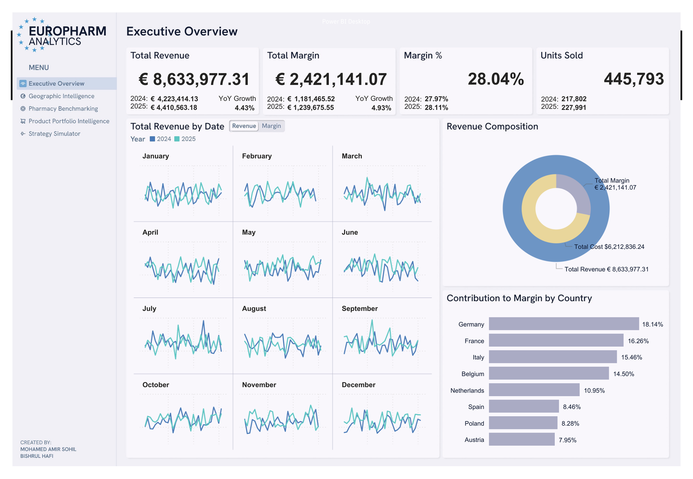

EuroPharm Analytics
Five views that move from what happened to what to do about it.

The Problem
Built for the DataDNA Pharmacy Sales & Profitability Analytics Challenge (Jan–Feb 2026), the brief was to turn raw pharmacy sales data into decisions a business could actually act on, explaining why, and what to do next.
The starting numbers don't make that case on their own: €8.63M in total revenue, a 28.04% margin, 445,793 units sold across the period. What makes the brief genuinely hard is what has to sit underneath those headline figures: a system that explains why margin lands where it does by country, by pharmacy type, and by product category, and then says something useful about what to actually do about it.
The Five Views
Each view answers a different version of "why," building toward the point where the dashboard stops describing performance and starts prescribing action.
Headline KPIs for the whole business, serving as the starting point before drilling into any one region, pharmacy, or product.
Margin drills from country down through region to individual pharmacy, so underperformance can be traced to an actual address.
Every pharmacy is ranked against its peers using margin-percentile/Z-Score normalisation within country and pharmacy-type cohorts, isolating genuine operational performance from geography or business-model effects.
Every SKU is classified into a quadrant — Volume Trap, Profit Engine, Premium/Niche, Low Impact — turning a units-vs-margin scatter into a direct stocking and promotion decision.
Three interactive levers let a stakeholder test trade-offs directly against the model instead of waiting on a rebuild.
The Levers, Ranked
The most efficient lever: roughly 172,000 in incremental margin per 100bps of uplift, about 7% profit growth without touching revenue.
Barely moves the needle by comparison: +4bps from cutting the lowest-margin 30% of SKUs.
Full removal buys +96bps of margin at a 10.6% revenue cost; a moderate 20–30% pullback captures most of that margin gain while keeping ~97% of revenue.
The Outcome
Margin grew 4.93% year-over-year against 4.43% revenue growth — profitability improving faster than volume. Geographic concentration is similarly clear: Germany, France, and Italy together account for roughly half of total margin contribution, reframing a vague "grow revenue" goal into a sharper "protect these three markets first" priority.
The category breakdown adds a second layer to that same idea. Prescription is a volume category more than a profitability one; Wellness is disproportionately profitable relative to its size. That distinction is exactly what the Strategy Simulator's structural-margin lever is built to act on, rather than treating every product category as equally worth pushing.
The Geographic Intelligence drill-down carries the same logic all the way down to individual locations, and the pharmacy-type breakdown makes the same point at a different resolution: an underperforming region isn't a dead end in this dashboard, it's a pointer toward an actual address. Rural underperformance specifically shows up here as a margin-conversion problem.
Not stopping at just reporting performance, the model also tells you which lever to pull first.
Gallery
A closer look at the system — click to expand, arrow keys move between them, Escape closes.